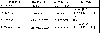
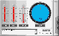
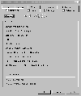
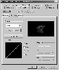
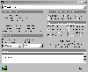
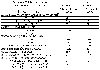

|
|
| 当前位置：电脑报电子版 > 1999 年 > 48 期 > 评测与市场 > 世纪力量——华硕V6600 Deluxe 显示卡测试报告 |
| 《 世纪力量——华硕V6600 Deluxe 显示卡测试报告 》 |
| 在本世纪的最后一个月，没有人知道世界将会变得怎样,是更加丰富多彩?还是将暗淡无光?但是有一点可以肯定，那就是我们眼里的3D世界将会变得更加精彩，这来自于nVidia的GeForce256，第五代3D加速卡的经典之作。它采用了独特的“GPU”（Graphic
Processor Unit，图形处理单元）构架，配合AGP 4×接口和快写技术（Fast Write），首次引入T＆L技术再加上256位的渲染引擎。采用了新的技术，到底最后的表现怎样呢？是不是像宣传的那样带来速度和画质的全面提升？这是广大读者最为关心的问题。这次华硕的V6600
Deluxe（豪华版)GeForce 256显示卡将给大家展示它真实的一面。 在《电脑报》第37期硬件周刊中已经对GeForce 256的各种技术作了一个全面的介绍，这里也就不再重弹旧调，本评测室更为关注的是一个产品是否达到了它应该表现出来的优越性能和对用户细心周到的考虑，只有这样的产品才是市场和用户的选择。 产品初览 为了满足不同的用户，华硕的GeForce 256推出了四种版本来满足不同层次的市场,它们分别是V6600的标准版和Deluxe豪华版（SGRAM显存）以及V6800标准版和豪华版（见表一）。这次评测的是华硕V6600 Deluxe 显示卡，采用亮黄色板基，5ns的32M SGRAM三星显存,15针VGA接口，S端子的输入输出各一个。和其它GeForce 256不同的是，它包括了3D眼镜输出和TV输出端。这款显示卡并没采用nVidia公司的公版设计，而是依照华硕一贯的风格,重新设计了显示卡，同时包含了视频采集口和视频输出口，可以进行视频的采集。主芯片采用0.22微米生产工艺,集成了2300万晶体管（比AMD Athlon的2200万个晶体管还多），其发热量相当大。因而在芯片上接了一个镶嵌在散热片里面的一体化风扇。这种风扇比较薄，给旁边的PCI插槽留下了足够的空间。 表1 这款显示卡最有特色的地方是首次运用了SmartDoctor技术，它是华硕自行开发的软硬结合式监控技术，包括风扇转速监测、AGP电压监测、SmartCooling智慧型监测、过热保护和动态超频功能。 风扇转速监测：监测程序会自动显示风扇的转速，在GeForce 256高效率工作时，保证你的显示卡不会轻易“感冒发烧”。 AGP电压监测和过热保护：nVidia的产品几乎都是耗能的大户，一度曾出现的TNT在某些主板上不能正常工作的情况就是因为主板AGP插槽供电不足。GeForce 256在高效工作时也需要足够的电力。为此华硕开发的AGP电压监测就显得十分重要。它可以同时监测AGP的电压和功率，并且在显示卡温度接近危险边缘时，SmartDoctor就会介入，确保显示卡能稳定持续地工作。 更让我们眼前为之一亮的是它的SmartCooling智慧型监测和动态超频技术。所谓智慧型监测是指当你在上网或者处理一般性文件不需要显示卡高速工作时,SmartDoctor可以自动降低显示卡的功率，使得表面温度相对降低。也就是说，V6600不会因为持续工作所带来的高温而加速电子元件的老化。这样稳定的系统还没有让大家满足，在四周一片的超频声中，华硕当然不会落后，它的动态超频法更有新意。在传统的固定超频方式上，通过SmartDoctor可根据执行的应用程序的不同，在不需要执行高速应用时，自动调整频率。  Smart Doctor温控监测画面 测试平台 为了充分发挥GeForce256的威力，我们使用了最新的Intel VC820主板＋NEC 128MB 800MHz RAMBus内存，600MHz Pentium Ⅲ(CopperMine，100MHz外频) ，硬盘为WD数据专家7200转，2MB缓存，测试环境为英文Win98SE,安装了DirectX 7.0以支持T＆L。驱动程序的优化： nVidia的驱动程序写得非常好，它的雷管驱动程序支持TNT/TNT2和GeForce256系列，GeForce256使用的是第三版雷管驱动程序。华硕在驱动程序设计上非常用心，在nVidia标准驱动程序的基础上加入了许多强大的调节工具，让用户能更好发挥显示卡的威力，以下是它比较有特色的应用： 1单步1Hz屏幕刷新率调节。通常nVidia的驱动程序只能提供60Hz/70Hz/75Hz/85Hz这样的刷新率调节，但华硕的驱动程序可做到从60Hz～200Hz的每1Hz步进调节，可充分发挥高档显示器的带宽。而且华硕的驱动程序提供更多的分辨率和更高的刷新率。 22D/3D刷新频率独立调节。 3桌面/3D/视频色彩独立调节，视频色彩独立调节意味着你可以直接调节VCD/DVD的色彩。华硕的驱动程序允许你实时调节，你可以把过暗的VCD调整到你满意的亮度。同时V6600系列还加入视频动态补偿技术，可提供更好的画质。  显示卡信息  色彩调节面板 超频： 这次测试的华硕V6600在额外加强散热的情况下，大致的极限稳定频率在140/200MHz左右。在测试中发现，使用T＆L的3D软件和游戏会导致GeForce 256芯片发热量剧增，在使用这一类软件时，我们建议不要超频使用。实际上V6600在设计上的冗余使得超频很容易，比如5ns的SGRAM可工作在200MHz，但GeForce全速工作的功耗实在太大了，根本无法保证GeForce 256芯片可长时间超频工作在135MHz以上的核心频率。正是为了保证高功耗显示卡的正常运行，华硕开发了Smart Doctor技术。可以预计这种技术在未来功耗更大的显示卡上会更加普遍。V6600在超到135/200MHz的时候，你可以看到Quake 3的成绩比120/166MHz接近提高了50％，可以预计采用300MHz的DDR显存GeForce 256性能会更高。AGP4×支持： 在测试中发现，要完全支持AGP4×需要多方面的配合。首先需要主板、显示卡支持，并调到相应的AGP4×模式，其次操作系统也要支持。虽然目前有些主板拥有AGP4×接口，但不代表系统能以AGP4×运行。在测试中就发现个别厂家的Intel 820芯片主板也有无法打开AGP4×的情况，换上其它820主板后，问题得到解决。这里使用PCI List 1.3X版本来查看（如下图），你可以看到在Intel 820上AGP4× 、Fast Write都是打开的。 测试分析： 在传统2D性能部分GeForce 256保持了以往的高水准，这部份的性能基本和TNT2 Ultra相同，也同时保留了原来优良的DOS兼容性和性能。在3D特效支持方面，GeForce 256比上一代TNT2系列能支持更多的3D函数，而且3D画面质量也有一定的改善。GeForce 256最大的特色在于提供了硬件T＆L加速的支持，在测试中也专门采用了支持硬件T＆L加速的测试软件。在3D WinBench 2000中的3D WinMark测试中，选用了场景1(Speedway)和场景2(Hangar)在1024×768×32位色下测试得分。在场景1测试中，采用GeForce 256的华硕V6600比采用TNT2 Ultra的华硕V3800的得分高出近一倍，在场景2中的得分两者却差不了多少，这说明硬件T＆L加速所带来的性能提升是明显的。虽然GeForce 256的核心和显存频率较TNT2 Ultra低，在没有T＆L加速的情况下，如3D WinBench 99 12和使用D3D加速的《兵人》游戏中，V6600的得分依然高于V3800，证明GeForce 256的填充率高于TNT2 Ultra，而且我们使用的TNT2 Ultra工作在150/200MHz的高频率。在nVidia自行推出的TreeMark测试得分中，V6600就将V3800的得分超过数倍之多，淋漓尽致地体现出了硬件T＆L加速的性能。  AGP4X 支持 很多利用OpenGL ICD接口的3D应用中，能够直接利用T＆L硬件加速，比如Quake 2/3测试中，可以看到非常明显的差距，特别是在Quake 3 1.09中800×600×32位高品质下，即使不超频也能得到60fps/s的速度，在这样的速度下玩游戏真是太爽了。 小结：GeForce 256的出现极大地推动了3D技术的进步，T＆L的引入让人们眼中的世界更加真实、瑰丽。华硕V6600在视频处理、图形设计以及3D游戏方面都有出色的表现，是目前最快的3D加速卡之一。同时希望GeForce 256能进一步优化驱动程序，并能有更多应用软件的支持，让广大用户得到极速、真实的享受。  |
| 下载本期推荐软件 | 页 首 |
| CPCW网站版权所有，电脑报网站编辑部设计制作发布 |
{kind=link}
{kind=link}
{kind=link}
{kind=link}
{kind=link}
{kind=link}